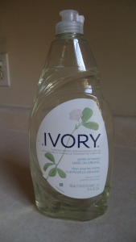

And last but not least, tunes to listen to while you scrub away.
A while ago I looked at various peoples' methods of cleaning their shellac 78rpm records. I used them all for inspiration in coming up with my own method.
Some of the 78s I acquire have been sitting around for decades and can be a bit dirty. I clean them the best I can before I catalog and file them. I do occasionally listen to some of them, but for the most part I collect them because they are old and I think they are cool.
Here are the supplies I use. First and foremost I would like to give a shout-out to Bags Unlimited. It is a great place to buy supplies no matter what you collect. What I use from them is the gold kraft paper 10" sleeves and their microfiber cleaning cloths.
I get a few things from Walmart that I treat as kind of disposable, such as cheap dish towels and dish drying mats. They are cheap enough that when they get soiled I just throw them away and use a new one. I also get the horse hair shoe brush from them, which is gentle enough to scrub the records without damaging them.
I wanted this style of dish rack for the records while they are drying, I like it because it's metal but has a rubbery coating. It took some hunting but I found this one at Target a while back.
When I originally researched this topic, I saw multiple sources reccommend the clear Ivory dish soap because it doesn't have the additives that other soaps have. It also took some hunting to find.

And last but not least, tunes to listen to while you scrub away.
First I put on tunes to listen to while I work. Then I make my soap solution in a container. You only need a few drops of the Ivory soap. Here are my washing and drying stations.
Next, I wet the brush, and starta scrubbin'. You will notice how more worn records kind of "absorb" the water where on a very good condition record the water will pool up on the top and roll around like water on a Rain-X treated windshield. I scrub in circular motions with the grooves.
While rinsing I have accidentally got the labels pretty wet a few times. While they seem to be fairly resilient, I try to keep the water away from them.

And that's how I clean my shellac 78rpm records.
As you saw
in the picture at the top of the page, I place them all in the nice
new sleeves from Bags Unlimited. Even if I have the original sleeve, I
replace it. The paper that was used in the original sleeves seems to
breakdown over time and some have a linty dust that I dont like. I do
save them separately and have quite the collection.